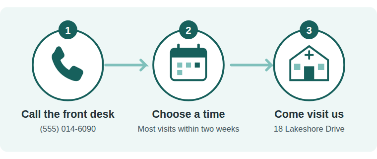

The accessibility engineer that fixes your code. And proves it.
An agentic workflow that repairs WCAG violations in real website source — then verifies every fix with deterministic re-scans, content-integrity checks and localized visual diffs, rolls back anything destructive, and routes judgment calls to a human with drafted fixes. The output: a fixed site and evidence a business owner can hand to their lawyer.
The typical defendant in a web-accessibility lawsuit is not a tech company. It's a bakery, a dental clinic, a small law firm — a site built by a freelancer in 2019 that nobody has touched since. The owner discovers the problem when the demand letter arrives.
5,114US web accessibility lawsuits in 2025 — a record (UsableNet year-end report)
64%of 2025 defendants had revenue under $25M — small businesses
95.9%of the top 1M homepages fail WCAG; 56 errors per page on average (WebAIM 2026)
Jun 2025European Accessibility Act in force — fines to €100k (DE) or 5% of turnover (IT)
Behind the legal risk sits the actual point: ~87 million people in the EU alone live with a disability. For them a missing form label isn't a compliance item — it's a door that doesn't open.
Why today's options fail this user
What it does
Why it fails
Overlay widgets
masks issues in a JS layer — code untouched
FTC fined accessiBe $1M (2025) over compliance claims; ~25% of sued companies had a widget installed when sued; 1,031 practitioners signed the Overlay Fact Sheet against them
Scanners
finds issues, fixes nothing
the report is homework; automation detects ~57% of issues by volume (Deque) and none of the fixes
Consultants
fixes properly
$1,250–2,750 audit + $350–550 per page remediation, weeks of lead time — priced for enterprises
Paste into a chatbot
sometimes brilliant, sometimes destructive
we measured it: same clinic page, two runs — one hid the clinic's booking phone number from blind users, one didn't. Nothing tells you which run you got.
The bottleneck in 2026 is not finding problems — it's not even fixing most of them. It's knowing, with evidence, that they were fixed and nothing was silently broken — at a price a bakery can pay.
Language models supply judgment. Everything checkable is checked by machinery the model cannot argue with — and every design choice answers a documented failure mode of LLM accessibility repair (research mapping in docs/research/prior-art.md).
1 · Scanaxe-core in a real browser; violations classified WCAG A/AA vs best-practice; ground truth per instance (rule + selector)
→
2 · Routeeach violation to one of five specialist agents, ordered so structure lands before colors; each gets only the tools it needs
→
3 · Fix (sandboxed)working copy only; no shell, no network; file access outside the copy is denied by a permission guard
↓
6 · Human review laneevery judgment call ships with a drafted fix + confidence — approve in minutes, not days
4 · Verify — deterministicallyre-scan (violation gone, nothing new) · word & image inventories (nothing may vanish) · pixel diff localized to the elements this fix may touch · fail ⇒ retry once ⇒ roll back
The three principles
Models judge; tools know. Contrast fixes come from WCAG luminance math that finds the closest compliant color preserving the brand hue. Alt text may only be written after the agent has rendered and looked at the image. Perception precedes assertion — so the hallucination class is eliminated, not just caught.
The verifier is not the fixer. Acceptance is decided by axe re-scans and content inventories; failed fixes roll back automatically and join the human queue.
Honesty is the product. Automation covers ~57% of issues by volume. StepFree claims verified fixes for the detectable layer and routes the rest to humans — the claim discipline the FTC fined the market leader for lacking.
Memory, skills, orchestration — used purposefully
Memory: a conventions ledger — the first agent to resolve a color pair or set an alt style records it; every later fixer on every page reuses it. One accessible palette per site, not one per page.
Skills: five per-domain knowledge files encode WCAG craft (e.g. "no ARIA beats bad ARIA — prefer removing it"; "an image inside a link describes the destination").
Orchestration: a deterministic pipeline; every changelog stage is a replayable flag (--stage v1…final), and every agent run is captured as a full trajectory.
Corpus: 12 synthetic small-business sites (13 pages), 134 scanner-verified WCAG A/AA violations mirroring the WebAIM distribution, ground truth locked before any run. Baseline = the same model (claude-sonnet-5), one direct prompt. The evaluator is independent of the system under test: it re-scans and re-screenshots every page itself.
On small static pages, the one-shot baseline remediated 134/134 scanner-detectable instances with zero regressions — frontier-model capability on the scanner-visible layer is saturated, and we say so. The layers that decide whether a real person can use the site are where the systems separate:
Baseline — one direct prompt
StepFree — final
WCAG A/AA instances remediated & verified
134/134
SLOT_FINAL_REM
Alt-text truthfulness (0–2, vision-judged by Claude Opus)
1.53 / 1.37 across two runs — 4 hallucinated or destructive alts each run
SLOT_FINAL_ALT — zero hallucinations
Informative content silenced with alt=""
1 of 2 runs — including the clinic's booking phone number
0 — the image agent must look before writing
Scanner-invisible issues surfaced for humans
0 (by definition)
SLOT_REVIEW_TOTAL, each with a drafted fix
Evidence produced
none — ship on faith
audit report + per-fix verification + full trajectories
Measured compute, whole corpus
$2.03
$SLOT_FINAL_COST

Exhibit A. The baseline resolved this image's missing-alt violation by marking it decorative (alt="") — hiding the phone number and address from screen-reader users. The scanner scored the page as improved (11 → 0). StepFree's vision-grounded agent read the image and wrote alt text carrying the steps; run two of the baseline described it but dropped the phone number. Same input, coin-flip outcomes — unless something checks.
Other baseline exhibits (judge's reasoning on file)
"Two wine glasses beside an uncorked bottle" — image shows one glass and a sealed bottle.
"Officials break ground with ceremonial shovels…" — an entirely invented ceremony; the image is a building.
An image-of-text hero given alt that doesn't match the words in the image (WCAG 1.4.5).
Economics per 13-page site
Human time
Cost
Manual remediation
~28 h
$4,550–7,150 (at $350–550/page)
Baseline + due-diligence QA
~4.3 h
$2 + QA labor
StepFree
~1 h (review queue + report)
$SLOT_FINAL_COST compute
Assumptions stated in docs/research/cost-model.md; primary metric unaffected by them.
134/134, 0 rollbacks needed — the reason "0 pages damaged" is a fact, not an assumption
kept — quiet gates still testify
final
conventions memory + beyond-scanner review lane + evidence report
SLOT_FINAL_SUMMARY
the product
The experiment we removed: a strict visual-diff gate
"Reject any fix changing >0.5% of pixels" sounds safe. A controlled, LLM-free experiment (stepfree/eval/pixel-vs-harm.mjs) shows it's broken both ways:
Edit
Viewport pixels changed
Words lost
Contrast recolor (legitimate)
0.27%
0
Entire menu item deleted (destructive)
1.32%
13
Naive heading retag (legitimate)
1.93%
0
Pixel area measures reflow, not harm — any gate loose enough to admit the legitimate retag admits the deletion. Removed as a gate, kept as a localized advisory; the word-inventory check orders harm correctly.
Hot take. We built verification armor expecting to catch a clumsy model — and the model never stumbled where we watched. It failed by asserting what it had no way to know: describing images it never saw, silencing an infographic with a phone number in it. In 2026, agentic scaffolding isn't primarily there to make models capable — it's there to make failures visible, bounded, and impossible to ship silently. Even our tooling agreed: shown an unviewable image, our grounded judge said "I cannot honestly score this" — the ungrounded baseline invented a croissant. Groundedness is an architecture property, not a model property. Capability saturated; trust didn't. Sell trust.
First buyers: web agencies — thousands of 2019-era SMB sites, already fielding the demand-letter call.
Market: accessibility software → ~$1B by 2030; incumbents at $40–50M ARR prove willingness to pay — for products that don't fix code. FTC action + 1,000+ suits/yr against widget users are the tailwind for "actually fix it".
Moat: anyone can prompt a model to edit HTML. The verification stack, evidence trail, and honesty posture are what a stranger can trust with production — and what survives a legal letter.
Safety & ground rules
All edits in a sandboxed working copy; deploying is a human act. Agents: no shell, no network, path-guarded file access.
Human reviewer in the loop for every judgment call, with drafted fixes.
Synthetic data only; no real business named; every claim traces to a source or a JSON artifact in the repo.
Built openly with the tools it evaluates: Claude agents did the heavy lifting under Shivam's direction; every number comes from the deterministic harness.
Curb cuts were built for wheelchairs — everyone with a stroller or a suitcase uses them. Fix the code, and everybody walks in. This is StepFree.